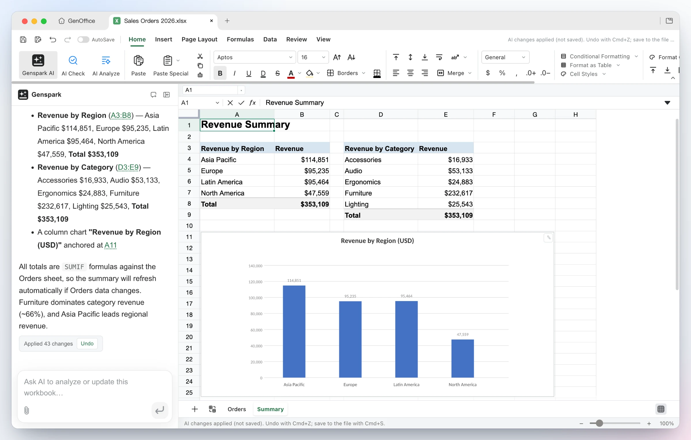
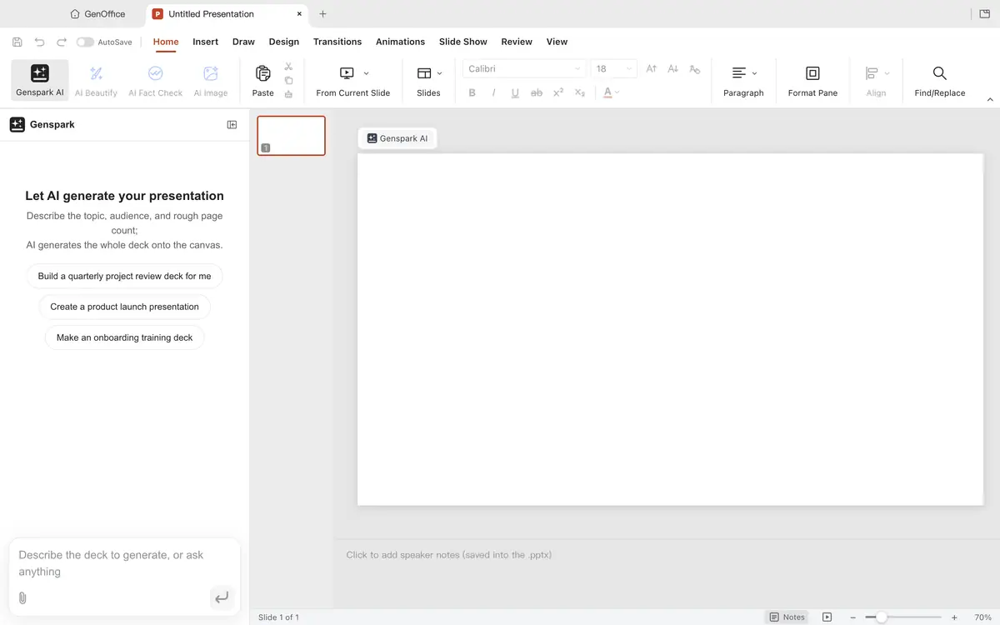
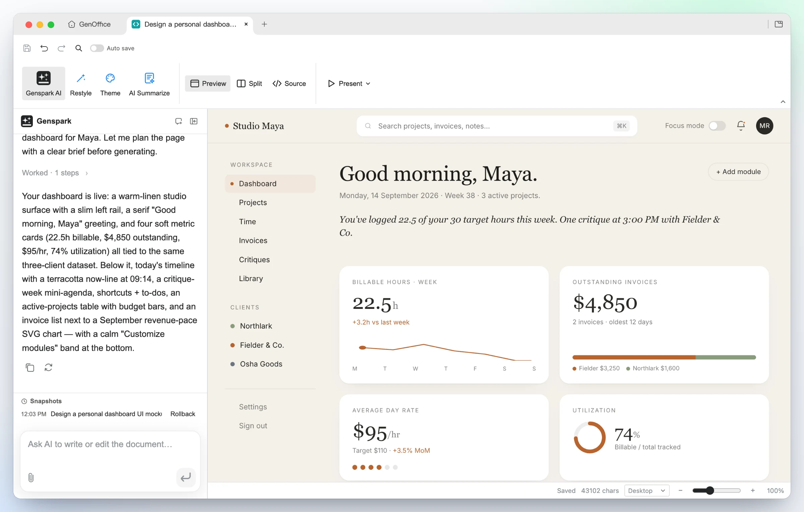
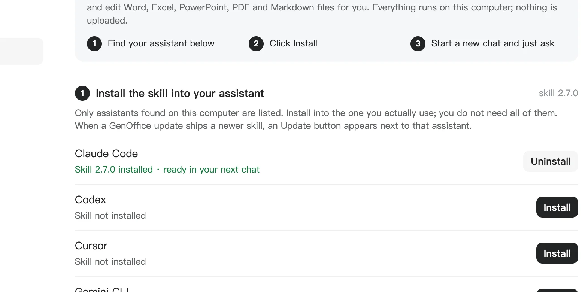

免费开源·Apache-2.0·macOS · Windows · Linux
全球首个全功能开源 AI 办公套件。
Word、Excel、PowerPoint 与 PDF 文件——由你和你的 AI 一起编辑,保存回真实格式。

免费开源·Apache-2.0·macOS · Windows · Linux
Word、Excel、PowerPoint 与 PDF 文件——由你和你的 AI 一起编辑,保存回真实格式。
为什么选择 OneDesk
不是在界面旁边挂一个聊天框:它读得懂文档、改得动内容,并让你看清它动了哪里。
只改写你编辑的部分,文件其余内容原样保留。文档放回 Word、Excel、PowerPoint 里依旧完好可用。
修改以修订记录和差异对比落地,一键回滚。表格得到的是活公式,而不是贴死的数字。
可以把某段文字或某片单元格对模型隐藏:模型只看到一个占位名称,原文始终留在你的文件里。
打开、编辑、保存、转换都在你的电脑上完成。PDF 转 Word、Markdown 转 HTML 全在设备端运行;只有 AI 调用会离开本机,发往你选择的模型服务。
首页搜索的是文件名、文件夹和文档全文——而不只是标题。
文档、表格、幻灯片、PDF、Markdown 与 HTML 编辑器共处一窗:一个文件系统,一个 AI 面板。
编辑器家族

文档
原生 .docx,细致到页眉、页脚与受保护区域。校对与改写以修订记录和内联差异呈现,逐条接受或拒绝,尽在你手。

表格
让它做分析,AI 会把真正的公式写进真正的单元格。图表、格式与条件规则在完成后依旧可以继续编辑。

幻灯片
一句话生成真正的 .pptx:文本框、版式与图片都能接着改,不是一张压扁的图。

直接编辑 PDF,还能把 PDF 转成 Word / Excel / PowerPoint,全程本地完成,无需上传。

Markdown 与 HTML
Markdown 与 HTML 是一等文档:AI 重排版、生成报告、HTML 转 Word,都在这张桌面上完成。

搜索
跨 .docx、.xlsx、.pptx、PDF 与 Markdown 的全文检索,结果直接定位到命中的那一段。
智能体原生
OneDesk 自带命令行、MCP 服务器与无头导出通道,智能体和脚本得到与图形界面完全一致的保真度。
在终端里转换、合并、导出:onedesk convert a.docx --to pdf
任何支持 MCP 的智能体都能接入这张桌面,把打开、编辑、保存文档当作工具来调用。
面向 CI 的字节精确文档流水线——与桌面端同一套引擎,无需打开窗口。

下载
最新版本 —
下载会打开 GitHub Release 页面,并为你匹配当前机器的构建。 中国大陆用户可通过 AtomGit 镜像 获取同样的构建。OneDesk 免费开源——无需注册账号,默认不上传任何数据。
搭配使用
LangFixer 是开源的中·英·日错别字与用字纠错引擎,桌面端完全离线运行。用 OneDesk 写好文档,交给 LangFixer 全文扫一遍;两个项目相互独立,纠错在 LangFixer 侧进行。